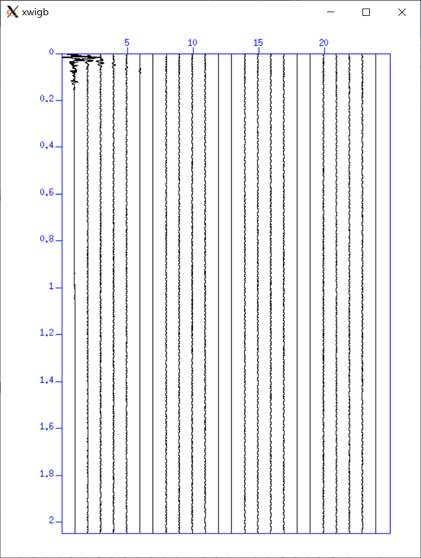
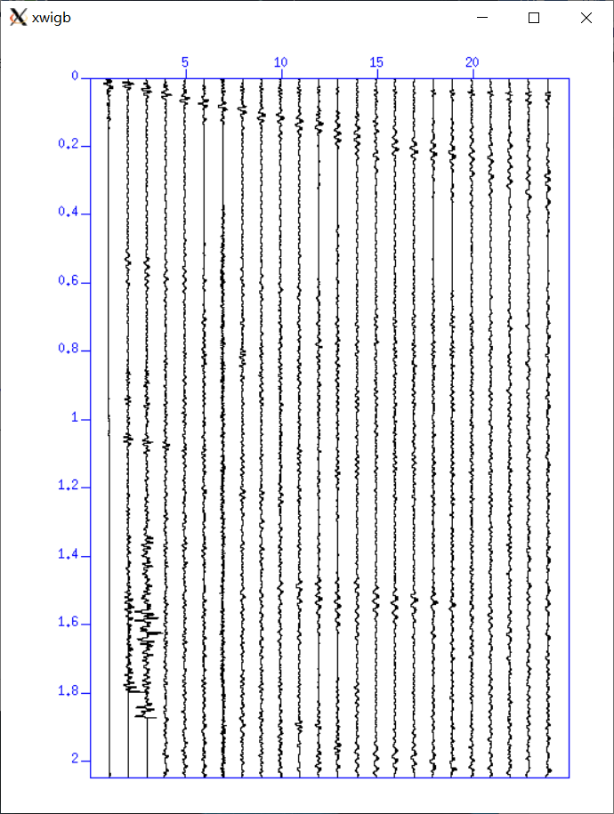
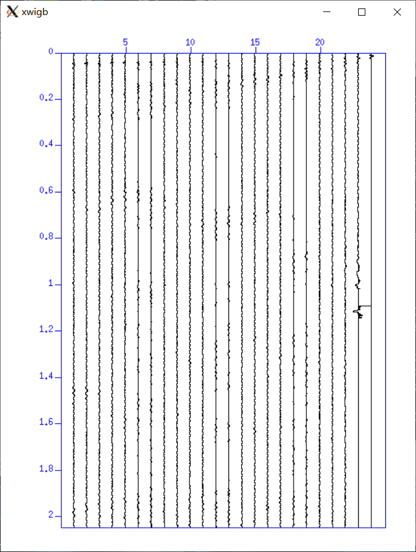
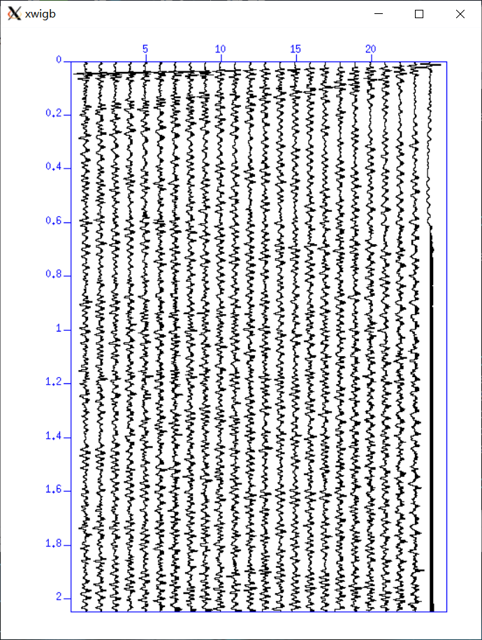
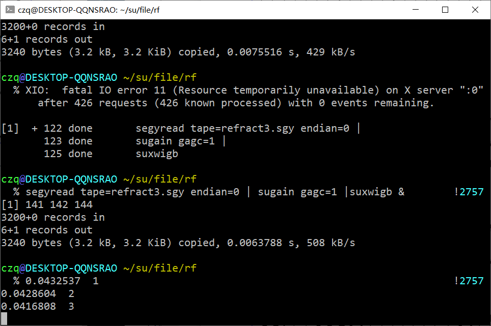
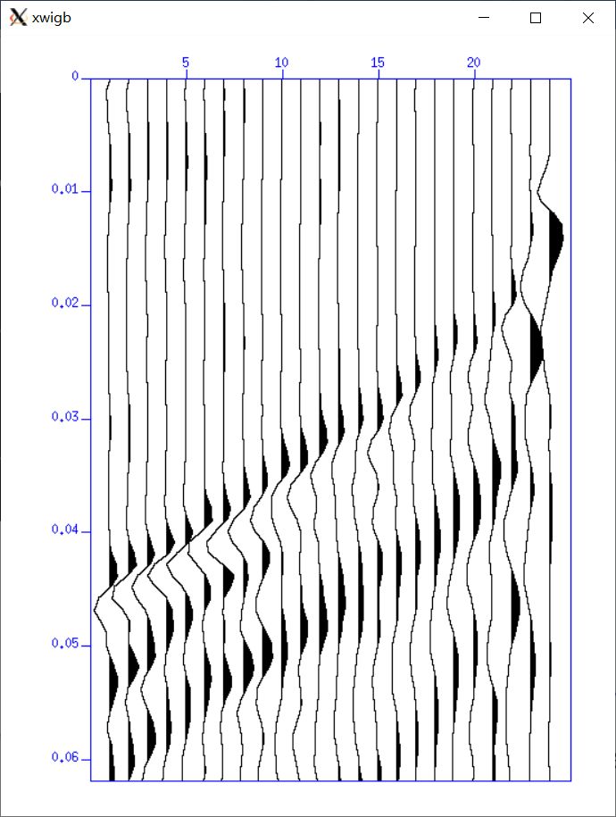
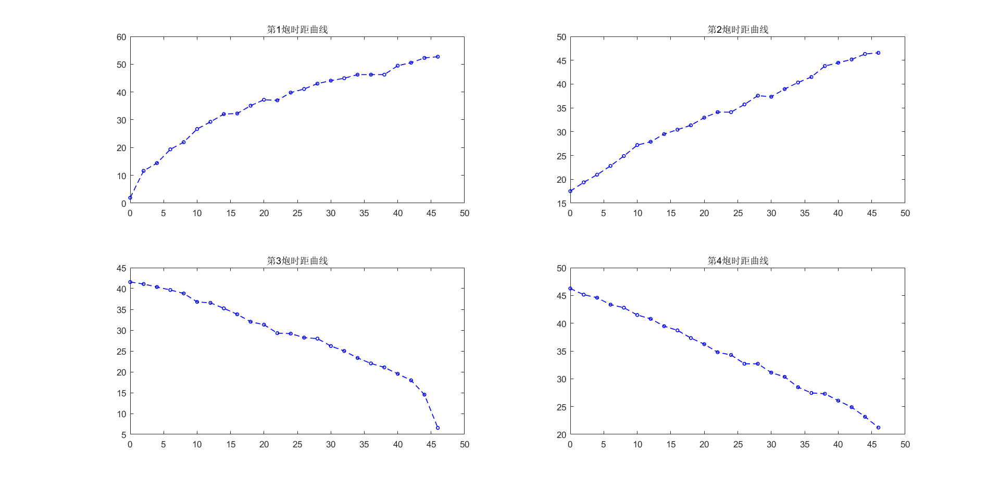
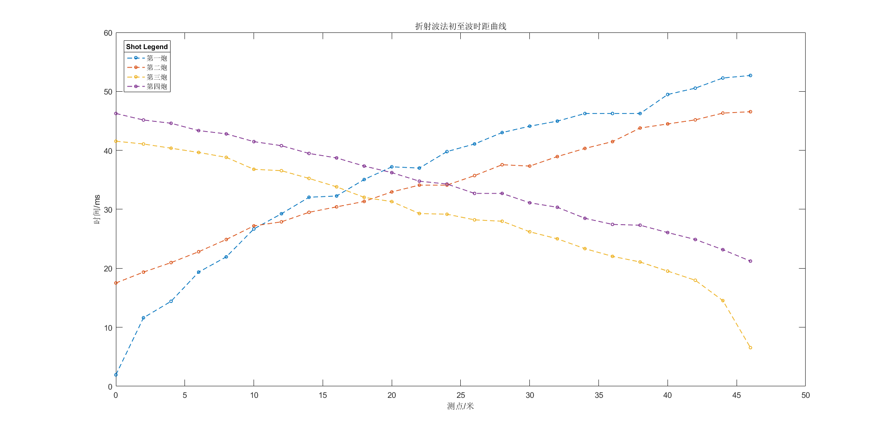
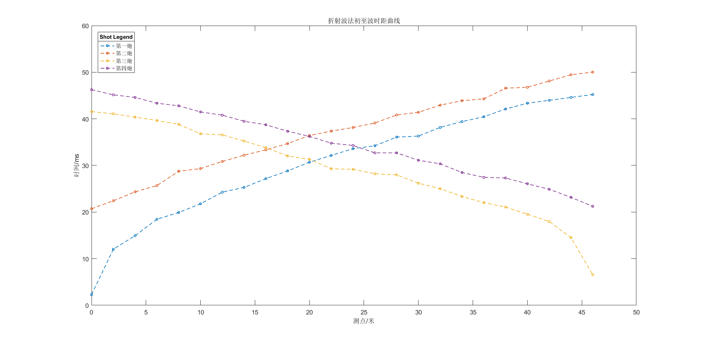

CWPSU折射波法实现及SG2格式转化
利用CWPSU绘制折射波法曲线
本来这期是反射波的，但是反射波模拟需要点时间，这里先把折射波法的操作给大家过一遍。
网上有一些教程，不过基本缺失很多问题解决方案，或者压根就是不可行的，有些人用Matlab直接读取SG2，不过在之后的初至拾取很比较费事，而且用Matlab读取也不简单，一些小问题总是会出现，本博客给出了在CWPSU下的全程攻略，同时提供文件和程序，助您成功！
那么我们主要是遇到两个问题：
本期所用到的数据和程序在Github上给出
您可以前去下载，不过数据为本组所测，您可以根据需要增加噪声，以免给您带来不必要的困扰。
前情提要
前面我们安装好了CWPSU，并先实现了一个简单的Model，但是如何将测量的数据用于实践，我们还没有起步，本期就最简单的折射波法进行解析。
我们采用的是相遇追逐的观测系统。偏移距分别是零偏和8米
SG2格式转换SGY
原生Linux
我们野外的仪器采集的数据是SG2格式，但这种格式无法被CWPSU直接读取，CWPSU官网给出了转化插件程序，在src/Third_Part/seg2segy/中。我们在该目录下编译
1 | make remake |
之后再键入
1 | ./seg2segy filename.sg2 1 |
即可在该目录下获得第一炮的sgy文件filename.sgy
由于博主没有在原生的Linux下进行该步骤，不确保该步骤的可行性，大家可以反馈给我，如果您没有通过该方法成功转化格式，请看下列步骤
WSL
博主在WSL里编译了seg2segy程序，不过格式转化一直不成功。无奈只好键入
1 | gcc seg2segy |
获得a.out
键入
1 | ./a.out filename.sg2 1 |
如果还不能解决问题。可以将目录中的C文件换到Windows下编译生成exe（反正WSL最大的优势就是Windows和Linux的快速畅通）
将该exe拷到sg2文件目录下，打开Powershell键入
1 | ./seg2segy.exe filename.sg2 1 |
博主在这里直接给出编译好的exe，在上述链接中可以获得。
Seg2fix
官方还给出了一个修复sg2文件的程序，如果您的sg2文件是有损的，或是无法被该程序识别的，您可以使用它，您可以在同样的目录下键入
1 | gcc -o seg2fix.c seg2fix |
来获得可执行程序。再键入
1 | ./seg2fix filename.sg2 |
同样，如果您无法使用该方法，上述链接也给出了seg2fix.exe。用法与seg2segy相同。
绘图
增益
我们获得原始数据会存在后面的检波点振幅过小而无法准确拾取初至。我们需要增益使得图像好看一些。
我们首先绘制原始数据，键入
1 | segyread tape=refract1.sgy endian=0 | suxwigb & |
出现原始图像，键入
1 | segyread tape=refract1.sgy endian=0 | sugain agc=1 |suxwigb & |
出现增益图像（此处我们是自动增益模式）。以refreact1为例，我们给出对比
原始图像：

增益图像：

我们看出还是对比很明显的。如果不增益，图像很难看。
高斯增益
我们在用同样的方法绘制refract3时发现增益后的图像不是很明显，为此我们需要使用不同的增益方法，博主结果探索，发现高斯增益的图像最漂亮。给出代码
1 | segyread tape=refract3.sgy endian=0 | sugain gagc=1 |suxwigb & |
给出对比
自动增益：

高斯增益：

我们是为了拾取初至，那么我们只关注上方的质量，明显高斯增益要漂亮。
初至拾取
在CWPSU中拾取是十分方便的，我们绘制出图形后，在图形中将鼠标放在道上，按下S键，系统就可以将您鼠标所在道数和坐标给到终端中。

为了拾取准确，我们可以放大指定窗口，框住您要放大的地区就可以，效果如下：

结果
之后我们就可以将数据复制到excel中，用Matlab或是GMT绘制曲线，效果如下：


除了一号曲线有些特殊外，其他和教材符合的很好。
这应该是一号线拾取的问题，我们重新拾取1、2号线的初至波，同时1号线改用高斯增益更加明显。得到结果如下：

这个就很漂亮了！
预告
那么本期就到这里了，本次的所有数据和程序您都可以在链接中找到，附有READ说明。
下期我们将继续探讨反射波法的模拟实验，敬请关注！